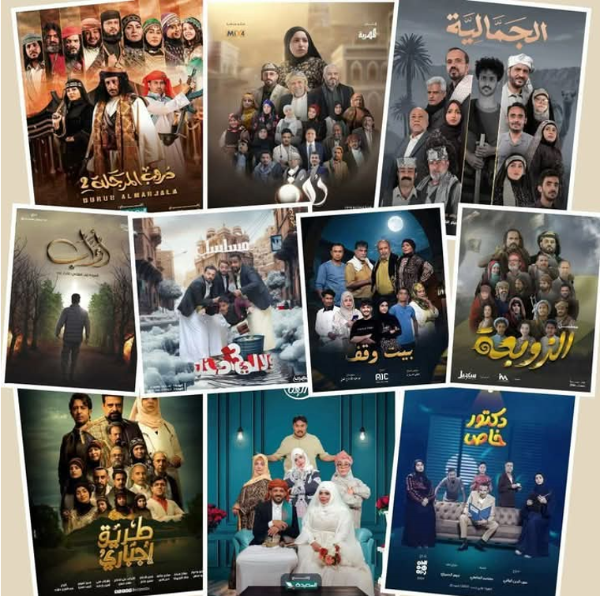

الدراما الرمضانية: مضمون سطحي وأفكار لا تمت للواقع بصلة

يعد شهر رمضان موسماً خصباً للإنتاج الدرامي في اليمن، حيث تتسابق العديد من القنوات لعرض أعمالها المختلفة، وقد شهد هذا العام ارتفاعا نسبيا في الإنتاج، قياسا بأعوام مضت، ولعل أبرز هذه المسلسلات (دروب المرجلة) الذي عرض بجزئه الثاني على قناة السعيدة، ومسلسل (الجمالية) الذي بثته قناة يمن شباب، ومسلسل (دُرة) الذي عرضته قناة المهرية، بالإضافة لمسلسل (طريق إجباري)، الذي يعتبر أول عمل درامي تنتجه قناة بلقيس، وإذا كانت هذه المسلسلات قد شهدت تباينا واضحا في تقييم متابعيها من الجمهور العام، بين راض ومنتقد، إلا أن الأهم هو تقييم المتخصصين وذي الخبرة، "أطياف" استطلعت أراء نخبة من الأدباء والمهتمين بالدراما عن المسلسلات التي عرضت في رمضان الفائت، من حيث أفكارها وجودتها شكلا ومضمونا.
تقول الكاتبة اليمنية والسيناريست (نور ناجي) أن الأفكار التي حملتها المسلسلات الرمضانية لم تعبر عن الواقع المعاش، ولعل السبب يكمن في أن القيود المفروضة على الكتابة الدرامية في اليمن منذ سنوات تسببت في خلق فجوة كبيرة بين الواقع المُعاش وما يُعرض على الشاشة، -وبحسب كلامها- هذه القيود التي عادة ما تعود لأسباب سياسية وإنتاجية، تضيق الخناق على أفكار الكاتب وتحد من حرية التعبير لديه، مما يجعل الأعمال الدرامية تظهر بهذا الشكل.
وترى أن الكاتب الدرامي هو المرآة التي تعكس واقع المجتمع، ولكن عندما يتم حصره في قوالب معينة أو توجيهات، يفقد القدرة على الإبداع، وإنتاج أعمال تعبّر عن الواقع المعاش وتخلق تأثيراً حقيقياً لدى المشاهد.
ويتفق الصحفي (ماجد زيد) ما مع قالته الكاتبة (نور ناجي) مشيرا إلى أن الفكرة الدرامية تعد جوهر العمل الفني، لكنها تعاني العديد من التحديات في اليمن، مشيرا إلى أن الكثير من أفكار المسلسلات الرمضانية، تفتقر إلى العمق، في تناول المواضيع، خاصة السياسية، مما أدى إلى إنتاج أعمال سطحية لا تعكس الواقع اليمني بشكل جدي. مؤكدا أن كتابة السيناريو فن يحتاج إلى مهارات خاصة، وغالباً ما يواجه الكتاب صعوبة في تحويل هذه الأفكار إلى نصوص وحوارات درامية قوية، وهذا ما حدث في بعض المسلسلات الرمضانية، فبعض كتابها يعتمدون على النمط التقليدي، مما جعل الأعمال تفتقر إلى الابتكار والتجديد المستمر.
لم تقتصر مشكلة الدراما الرمضانية على غياب الفكرة فحسب، بل امتدت حتى أصبح الهدف منها مادياً أكثر مما هو معنوي، يقول الناشط الاجتماعي والمهتم بالدراما (نشوان الحبشي) "بعض المسلسلات الرمضانية لم تكن ذات جودة وهدف، وللأسف، أصبح التقييم عند البعض يدور حول عدد اللايكات والمشاهدات، وكأن الهدف من العمل الفني لم يعد إيصال رسالة أو تقديم محتوى هادف، بل مجرد ترند مؤقت ينتهي بانتهاء الموسم".
ويضيف الحبشي لـ (أطياف) "إن الدراما الحقيقية لا تقاس بالأرقام، بل بجودة القصة، وهدف الرسالة، وأداء الممثلين، والتأثير الذي تتركه في الجمهور، فالمشاهد بحاجة إلى أعمال تعكس الواقع، وتقدم محتوى يحترم عقله ويثري ثقافته، والدراما ليست مجرد سباق على الترندات وعدد المشاهدات، كما حدث في رمضان الفائت، فالفن رسالة، والتحدي الحقيقي ليس في السباق على الشهرة الرقمية، بل في تقديم أعمال تبقى في ذاكرة الناس وتصنع فرقاً، وترتقي بالذوق العام".
ومع أن المسلسلات شهدت في الموسم الرمضاني السابق زيادة من حيث عددها، ومن حيث مدة حلقاتها، إلا أن بعض المتخصصين لا يعتبرون ذلك إنجازا، تقول الإعلامية والكاتبة (منال الشيباني) "إن التركيز في الأعمال الدرامية الرمضانية أصبح على الكم لا الكيف، إذ لم نرَ أي اهتمام بجودة الإخراج أو المحتوى، في المسلسلات الرمضانية، ما جعل هذه المسلسلات أشبه بمنتجات منتهية الصلاحية".
وتضيف "ثلاثون حلقة، مجردة من أي جديد يُذكر، محشوة بحوارات وأحداث مملة لا تضيف للعمل أي قيمة حقيقية".
بدوره يعتبر الروائي والأديب (خالد الضبيبي) أن بعض المسلسلات كانت طويلة، وهذه الإطالة قدمت لنا أعمالاً بلا هوية، ولا ربط ولا موضوعية، مهمتها تمديد وتغطية وقت المسلسل فقط، دون أي فائدة أو محتوى يجذب المشاهد. ناصحا صناع الدراما بتقديم العمل الجيد، سواء كان خمس حلقات أو عشرين حلقة أو مئة، وأن يتوقفوا عن تصدير الأعمال التجارية التي لا تحمل أي هوية أو محتوى إبداعي.
من جهته الناقد والأديب (د.قائد غيلان) ليس راضيا عن أداء بعض المسلسلات الرمضانية، يقول " بعض المسلسلات للأسف راهنت على غباء المشاهد وجهله، لهذا لم تبذل أي مجهود في جعل الأحداث أكثر ترابطاً ومعقولية، وأصبح البعض منها مسخرة أمام تعليقات العامة ناهيك عن المتخصصين والمشتغلين في هذا المجال، فشخصيات تموت وتبعث في حلقات أخرى، ورصاصة تضرب مباشرة على القلب، ويظهر المصاب في مشاهد أخرى حيا يرزق، إنهم لا يحترمون عقلية المشاهد، ونخشى أن يستمروا في إنتاج مسلسلات أخرى بنفس الاستخفاف بعقلية المشاهد".
من ناحيته يرى المصور (هشام الهلالي) أن انتقاد المسلسلات الرمضانية اليمنية أصبح عادة متجذرة وموضة يتبناها البعض من عام إلى آخر.
يقول الهلالي: "أصبح البعض يحرض على عدم مشاهدة هذه الأعمال من قبل أن تعرض، وعند عرضها يكون أول من ينتقدها رغم عدم مشاهدته لها. هؤلاء الاشخاص تجدهم دائمًا يستخدمون الألفاظ الجارحة والكلمات الحادة في انتقاداتهم، ولو سمح لهم الأمر، لذهبوا إلى قسم الشرطة ليقدموا الشكاوى ضد الممثلين والقائمين على هذه الأعمال.
ويضيف: "الدراما بخير، وهؤلاء النجوم مبدعون ومجتهدون في عملهم، فقد بذلوا ما في وسعهم للخروج بهكذا صورة في ظل ظروف قاسية، في بلد يفتقر إلى الأكاديميات الفنية، ولا توجد فيه مسارح أو دراسات متخصصة في المجال المسرحي والدرامي".